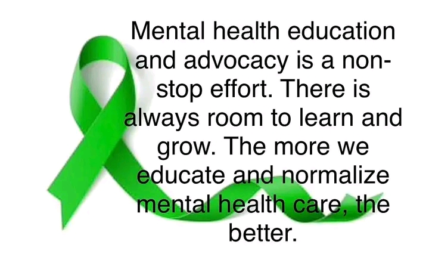

Spreding Positivity Through The Internet: A Campaign For Mental Health Awareness
What Is "MENTAL HEALTH"?
Mental Health according to the World Health Organisation ( W H O ) is defined as 'A state of one's emotional/mental well-being that enables people to cope with the stresses of life, realize their abilities, learn and work well, contribute to their community or the absence of mental disorder.'
Mental disorder on the other hand is a behavioural or mental pattern that may cause suffering or a poor ability to function in life. The impact of the internet on today's society is undeniable. With billions of users worldwide, it has become a powerfull tool for communication and collaboration. However with it's advantages it has also brought challenges, one of which is a negative impact on mental health. This awareness program aims to harness the power of the internet to promote positivity about mental health issues.
Mental Health Awareness, Education and Advocacy

The purpose of this page is to raise Mental Health Awareness to help people who are impacted by mental health issues, especially young people who suffer from this conditions.
Raising mental health awareness is not only to help people but knowing more about mental health issues to assess own risks and find help for any condition they might have.
I think people need to understand that there is a difference between whether you are just having a bad day going through everyday challenges is a part of life and different emotions are allowed and it's okay to feel sad, angry or happy because everyone has mental health.
However there is a difference between mental health and mental illness. If you have a mental illness then you may need to get help or just try to manage them yourself depending on how serious your mental illness is. Having a bad day won't necessarily mean you are depressed, being worried won't necessarily mean you have anxiety. So please don't worry and if you think you need help then don't hesitate to get the help you deserve.
How Do You Know Your Friend Is Going Through A Tough Time?
Sometimes it's hard to know the difference between the regular ups and downs of life, and mental health concerns like depression and anxiety. Someone experiencing mental health concerns might feel ashamed, and worried about how their friends will react if they talk about it.
And also not everyone experience depression or anxiwty in the same way, and symptoms can vary; however, there are changes in the way a person going through tough time acts that you can look out for.
Signs and symptoms of a condition that thankfully, many of us won't experience. For those that live in this hell, my heart goes out to you
If your friend is experiencing depression, they might:-
Seem down or tearfull a lot of the time, or cranky more often.
Stay up really late or sleep in a lot, or have problems with sleep.
Miss a lot of school, work and other regular activities.
Miss hangouts or often cancel at the last minute.
Eats more or less than usual.
Drink alcohol or take drugs more than usual.
Talks about feeling empty, tired or worthless.
Seem more pessimistic and hopeless, and like they have less energy in general.
If your friend is experiencing anxiety, they might:-
Be obsessed with details, such as being a perfectionist or wanting to plan things out thoroughly.
Have difficulty in making decisions.
Avoid new people, situations or unfamiliar places.
Have troble keeping to schedule or plans, seems disinterested, forgetful, distracted or scattered.
have digestive issues.
Have a need to reassurance - about how you feel whether plans make sense, triple checking times.
Have difficulty sleeping.
If you are not sure how to help someone with depression and anxiety, ask them. You could also offer them some options and let them choose what suits them best. For example, you could offer to listen and let them express their thoughts, or just to hangout without serious conversation.
Try to be caring, compassionate and curious, and let them know that they matter to you and you are taking them seriously.
Types of Mental Health Disorder
There are multiple conditions of mental health disorder, one of which is 'Dissociative Identity Disorder'
Dissociative Identity Disorder (DID) is a rare condition previously known as multiple personality disorder.
Someone diagnosed with DID may feel uncertain about their identity and who they are. they may feel the presence of other identities, each with ther own names, voices, personal histories and mannerisms. Sending love to those who suffer from this trauma-based condition.
It's Mental Health Month
Here are a few things you can do to feel a little better when times are tough...
GIVE GRATITUDE
Making gratitude a habit begins to rewire your brain for a higher level of happiness. Neurons that fire together wire together.
Before you sleep each night bring 5 things to mind you're gratefull for. for example:-
Breathing
Cofee
Giggles
A jam sandwich
That video of a turtle wearing a tiny hat.
Whatever it is to you.
Not only that, but it releases oxytocin into the vegas nerve which keeps it healthy. The vegas verve is pretty important as it runs through every major organ in the body. So it's physically and mentally good for ya!.
MOMENTS OF JOY
Too often we are striving, for a better career, relationship, home etc. Did you know ambition is seen as detrimental in Buddhism? This is because paradoxically it takes you away from fulfilment.
Desire to be somewhere else either physically, psychologically and even spiritually means you are never content. Of course this doesn't mean don't have dreams.
But for the love of God, just for one moment, stop working on yourself and feel the sun on your face. Go on, i dare you!. Do something for pure joy rather than productivity - dance, see a band, write a poem, eat cheesecake, prank your mum, learn the guitar etc. And if you feel you need permision, this is it.
PRACTISE PRESENCE
This is a big one. Sounds dull and it is a bit, but i promise there is a tresure trove stuck in the sands of boredom. When you are anxious, overwhelmed or simply pondering the meaninglessness of things, bring your attention to the present moment.
Take long slow breathes and with each exhale drop your awareness into your body.
Touch five things around you and notice how they feel.
Tune your inner and outer environment - whats happening?.
Practising presence has a positive knock-on-effect that impacts self-acceptance. At the least... you will feel more peaceful and less likely to punch the wall. At the most... you can reach full enlightenment.
Yep, just by doing this. No joke. Lets do these things together.